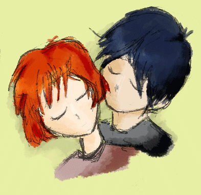
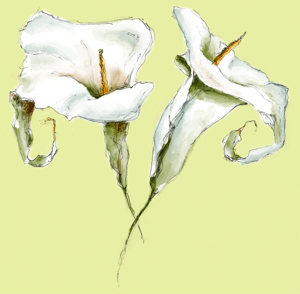
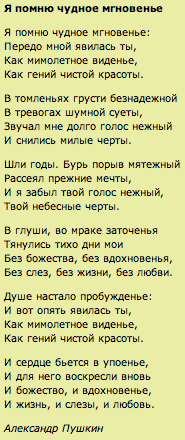
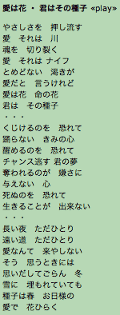

Underwear «play»
A pretty girl in her underwear
A pretty girl in her underwear
If there's anything better in this world
who cares
La mort, c'est la mort
mais l'amour, c'est l'amour
La mort, c'est seulement la mort
mais l'amour, c'est l'amour
A pretty boy in his underwear
A pretty boy in his underwear
If there's a better reason
to jump for joy
who cares....
|
 |
The
Way You Say Good-Night «play»
So faraway and so alone how could I ever take you home
You're beautiful, beautiful
You've got a devastating point of view
and everything you say is true
You're beautiful, beautiful
The nightbirds start to sing their favorite song:
"The Way you Say Good-Night"
The nightbirds start to sing
their favorite song and the moon begins to sing I kiss you
and the sun goes down
How come it's always dark when you're around
You're beautiful, beautiful
The nightbirds start to sing
their favorite song
The moon begins to sing
You're beautiful, beautiful
The stars begin their Busby Berkeley dance:
"The Way You Say Good-Night"
and the night becomes a musical extravaganza:
The Way You Say Good-Night
The way you say good-night I dream of all day long
Oh, I could write a song
about the way you say good-night... |
The Owl and the Pussycat
The Owl and the Pussy-Cat went to sea
In a beautiful pea-green boat:
They took some honey,
and plenty of money
Wrapped up in a five-pound note.
The Owl looked up to the stars above,
And sang to a small guitar,
"O lovely Pussy, O Pussy, my love,
What a beautiful Pussy you are,
You are,
You are!
What a beautiful Pussy you are!"
Contemporary Illustrator: Donna L. Derstine
Pussy said to the Owl, "You elegant fowl,
How charmingly sweet you sing!
Oh! let us be married;
too long we have tarried:
But what shall we do for a ring?"
They sailed away, for a year and a day,
To the land where the bong-tree grows;
And there in a wood a Piggy-wig stood,
With a ring at the end of his nose,
His nose,
His nose,
With a ring at the end of his nose.
"Dear Pig, are you willing to sell for one shilling
Your ring?" Said the Piggy, "I will."
So they took it away, and were married next day
By the Turkey who lives on the hill.
They dined on mince and slices of quince,
Which they ate with a runcible spoon;
And hand in hand on the edge of the sand
They danced by the light of the moon,
The moon,
The moon,
They danced by the light of the moon.
Edward Lear |
My
Funny Valentine «play»
My funny Valentine
Sweet comic Valentine
You make me smile with my heart
Your looks are laughable
Unphotographable
Yet you're my favourite work of art
Is your figure less than Greek
Is your mouth a little weak
When you open it to speak
Are you smart?
But don't change a hair for me
Not if you care for me
Stay little Valentine stay
Each day is Valentine's day
Is your figure less than Greek
Is your mouth a little weak
When you open it to speak
Are you smart?
But don't you change one hair for me
Not if you care for me
Stay little Valentine stay
Each day is Valentine's day |
 |
Do
You Realize «play»
Do You Realize
that you have the most beautiful face
Do You Realize
we're floating in space
Do You Realize
that happiness makes you cry
Do You Realize
that everyone you know someday will
die
And instead of saying all of your goodbyes
let them know you realize that life goes fast
It's hard to make the good things last
You realize the sun doesn't go down
It's just an illusion caused by the world spinning round
Do You Realize - Oh - Oh - Oh
Do You Realize - that everyone you know
Someday will die -
And instead of saying all of your goodbyes
let them know you realize that life goes fast
It's hard to make the good things last
You realize the sun doesn't go down
It's just an illusion caused by the world spinning round
Do You Realize
that you have the most beautiful face
Do You Realize |

A Magic Moment I Remember
A magic moment I remember:
I raised my eyes and you were there,
A fleeting vision, the quintessence
Of all that`s beautiful and rare.
I prey to mute despair and anguish,
To vain pursuits the world esteems,
Long did I near your soothing accents,
Long did your features haunt my dreams.
Time passed. A rebel storm-blast scattered
The reveries that once were mine
And I forgot your soothing accents,
Your features gracefully divine.
In dark days of enforced retirement
I gazed upon grey skies above
With no ideals to inspire me,
No one to cry for, live for, love.
Then came a moment of renaissance,
I looked up - you again are there,
A fleeting vision, the quintessence
Of all that`s beautiful and rare.
A. S. Pushkin |
I'll
Stand By You «play»
Oh.. why do you look so sad
Tears are in your eyes
Come on and come to me now
Don't be ashamed to cry
Let me see you through
'Cause I've seen the dark side too
When the night falls on you
You don't know what to do
Nothing you confess
Could make me love you less
I'll stand by you
I'll stand by you
Won't let nobody hurt you
I'll stand by you
So if you're mad.. get mad
Don't hold it all inside
Come on and talk to me now
Hey.. what you got to hide?
I get angry too
Well I'm alot like you
When you're standing at the crossroads
And don't know which path to choose
Let me come along
'Cause even if you're wrong
I'll stand by you
I'll stand by you
Won't let nobody hurt you
I'll stand by you
I'll stand by you
I'll stand by you
Won't let nobody hurt you
I'll stand by you
Take me into your darkest hour
And I'll never desert you
I'll stand by you
And when..
When the night falls on you.. baby
You're feeling all alone
you won't be on your own
I'll stand by you
I'll stand by you
Won't let nobody hurt you
I'll stand by you |
I am glad that we have gotten to know each other well
and that you put up with my antics. It has been a very enjoyable 4ish
months with you. You have shown me things that I never knew about both
outside and within myself. One thing I really like is the differences
in our similarities. We book like reading, but completely different genres
and authors. Hmmm, well, those are our only similarities. But there have
been so many good memories built too! Talking at Arnie's, ice skating,
Jack's rump, cat butt on the face, oatmeal candles, staying up past sunrise,
Japanese dinner, Nomi, Edward Lear, a wonderful card, red bows, cards,
breakfast suprises, dozens of emails a day at work...
Oh Meagan, I, I... I think I.....LUNE YOU!!! I can't wait to come back
and you crash into me Hobbes style. I have missed your goofy mouth and
charming smile, and that laugh that lives in there. Watch out, I will
be tickling with extreme disregard for human life, I have 3 months to
catch up on. There is so much more to look forward to too. Picnics, runs,
horsies, roller skating, you explaining Master and Margarita to me with
that wonderful brain you have that can explain all the things I can't.
And the silliness! Tee hee. I forget what we were doing, but it was dark
and in bed, and you started laughing and when I asked you just said, "This
is silliness." And all the inappropriate laughter. You've got some
sort of nifty blend of smarts, inappropriateness, weaknesses, looks, and
patience that I haven't seen in anyone else and I want to hold on to that
and snuggle up in it and eat the part that tastes like blueberry pancakes
for breakfast on a warm porch overlooking a lake while it rains.
Plus you let me touch your boobies! That isn't the only reason I like
you, but you can admit it can be kinda fun, right? I like you for eyes
and mouth, brains and words, mannerisms and dreams. I like how you know
about 'important' stuff. I like the way you make me feel like I am important
and becoming a fuller and better person. I like that you stay in touch
with your friends. I don't like your insides. Well, I like the inside
of your mouth, and there are some other inside that I reckon are pretty
good, but I mostly mean your bloods and joints. Boo to them. But I like
how you don't let it get to you (often). And I also like how you put up
with my perversions and working sex into everything, like just before.
And I like how you call me buster, pumpkin.
I feel so lucky to know you and am so glad that we met. I have felt that
our bond has grown stronger and more meaningful. Whatever we have going
on feels wonderful and nifty and good. In a few short months you have
become a very important person to me.
I MISS YOU THIS MANY: 1,276,489,214,543,245,665,481,726,541,872,564!!!!
Lune,
Tim |

Ai wa Hana, Kimi wa Sono Tane
Some say love, it is a river
That drowns the tender reed.
Some say love, it is a razor
That leaves the soul to bleed.
Some say love, it is a hunger,
An endless, aching need.
I say love, it is a flower,
And you, its only seed.
It's the heart afraid of breaking
That never learns to dance.
It's the dream afraid of waking
That never takes the chance.
It's the one who won't be taken
Who cannot seem to give,
And the soul afraid of dying
That never learns to live.
When the night has been too lonely,
And the road has been too long,
And you think that love is only
For the lucky and the strong,
Just remember, in the winter,
Far beneath the bitter snow,
Lies the seed that with the sun's love,
In the spring, becomes the rose. |